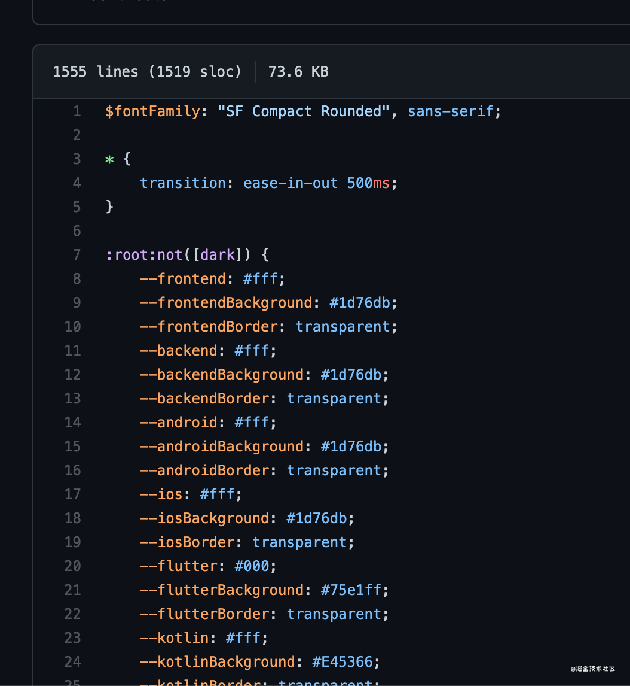
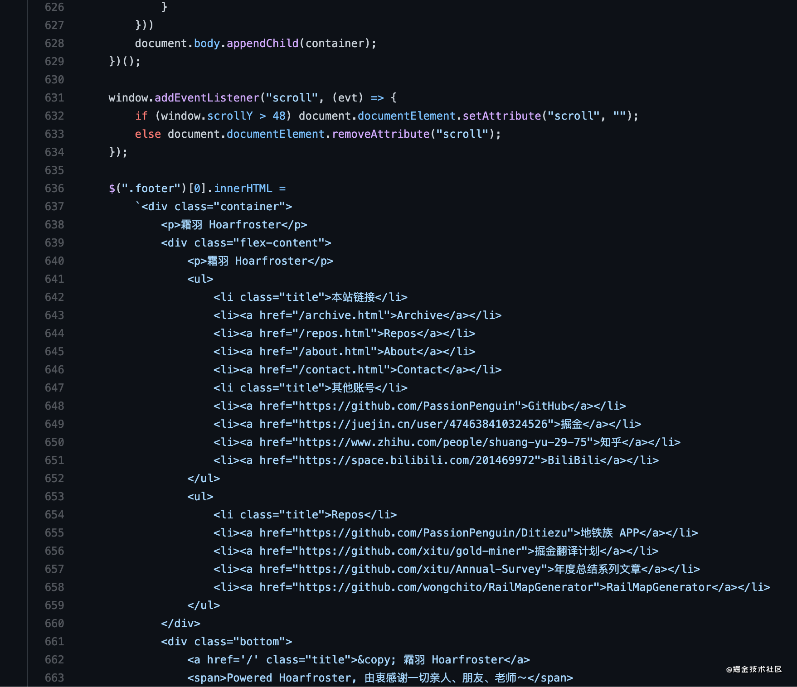
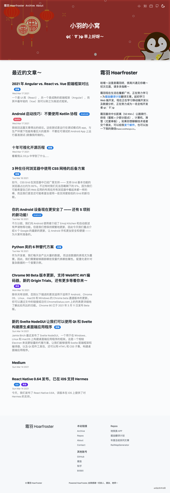
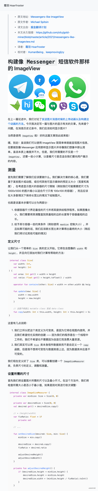

- 标签：Kotlin、JavaScript、前端
自己构建一个博客系统｜项目复盘
为神马要搞这个
最近参与了掘金的翻译计划，产出了大量的 Markdown 文章，希望搭建一个个人站，存放自己的一些文章～
看了一些现成的解决方案，感觉局限性太多，不利于后期自定义，再加上我这个超级喜欢造轮子的性格，于是乎 👀
我就搭建了一个自己的处理系统
别问我为啥这样做，我觉得好玩（，而且自定义能力超强，可以随意加控件！！！
需求功能
- 渲染 Markdown 标记
- 自定义页面
- 后期可以简单的对所有文章页面作更新
- 便于移植
本次使用的工具有：
前端部分
基础的前端页面构造使用了原生 Vanilla JavaScript + CSS + HTML，构造一个静态的文章展示系统。
在样式方面使用了 SCSS 语言，并且顺带使用了 GitHub 的主题 @primer 库，并顺带魔改了一番～
后端部分
在文章处理（标签获取、图片爬取）上使用了 Java + Kotlin 的组合，主要是我对 Kotlin 挺熟的，毕竟做了一年 Kotlin 项目了 = =。
构建思路
后端处理
元数据处理
Java 主要处理元数据，包括文章的标签（分类）的读取，文章图片的解析爬取，以及文章标题简介等信息的读取，具体思路如下：
sequenceDiagram
participant z as Markdown 文件
participant l as JSON 文件
loop 处理数据
z->>l: 是否存在 远程 图片
activate z
alt 有
l->>z: 下载
else 没有
l->>z: 跳过
end
z->>l: 是否已经有标签数据
activate z
alt 有
l->>z: 跳过
else 没有
l->>z: 加载数据（GitHub / 本地）
end
end
先看一下模版内容，默认模版：
> * 标签：标签 A、标签 B
# 标题
翻译模版：
> * 原文地址：[]()
> * 原文作者：[]()
> * 译文出自：[掘金翻译计划](https://github.com/xitu/gold-miner)
> * 本文永久链接：[https://github.com/xitu/gold-miner/blob/master/article/2021/.md](https://github.com/xitu/gold-miner/blob/master/article/2021/.md)
> * 译者：
> * 校对者：
# 标题
这里的所有的代码都保存在了这里：PassionPenguin:PageGenerator/io.hoarfroster，首先是实现获取所有文件：
fun main(args: Array<String>) {
var downloadImage = false
var inputDir: String? = null
for (name in args) {
if (name.contains(Regex("--input=(.+?)")))
inputDir = name.substring(8)
}
if (inputDir == null)
return
val dir = File("${inputDir}/documents/")
val files = dir.listFiles { _, name -> name.endsWith(".md") }
}
然后使用 mapIndexed 遍历所有 Markdown 文件，读取文件：
files?.mapIndexed { index, it ->
var sourceMarkdown = it.readText()
val document = Jsoup.parse(HtmlRenderer.builder().build().render(Parser.builder().build().parse(sourceMarkdown)))
}
这里使用了 commonmark 和 Jsoup 解析了 Markdown 文件为 HTML 文件（其实也可以不用，全文正则匹配，但感觉还是有些麻烦）。
我们需要的信息有：
- 标题
- 标签
- 简介
- 文件名
- 最后修改时间
- （远程链接）
- （译者）
标题
document.selectFirst("h1").text()
标签
- GitHub 标签
思路很简单，直接用 URLConnection 读取数据并解析就好了：
package io.hoarfroster
import org.jsoup.Jsoup
import java.net.URL
import javax.net.ssl.HttpsURLConnection
class RetrieveResult(val tags: MutableList<Tag>)
fun retrieveResult(repoUrl: String): RetrieveResult {
println(" - Processing tags data")
val tags: MutableList<Tag> = mutableListOf()
val connection = URL(repoUrl.replace("blob", "commits").replace(" ", "%20")).openConnection() as HttpsURLConnection
val document = Jsoup.parse(connection.inputStream.bufferedReader().readText())
document.select("[data-hovercard-type=\"pull_request\"][data-url].issue-link.js-issue-link")
.filter { e ->
Regex("#([0-9]+?)$").matches(e.html())
}.map { e ->
Regex("#([0-9]+?)$").find(e.html())?.groupValues?.get(1)
}.forEach { it ->
Thread.sleep(1000)
val conn = URL("https://github.com/xitu/gold-miner/pull/$it").openConnection() as HttpsURLConnection
val doc = Jsoup.parse(conn.inputStream.bufferedReader().readText())
if (doc.select(".js-issue-labels > *").size > 0
&& doc.selectFirst(".js-issue-labels").text().contains("翻译完成")
) {
doc.select(".js-issue-labels > *").forEach {
if(!it.text().contains("翻译完成"))
tags.add(Tag(it.text()))
}
}
}
return RetrieveResult(tags = tags)
}
- 文内标签
更简单了，直接 RegEx：
val tags = mutableListOf<Tag>()
Regex("标签：(.+?)\n").find(sourceMarkdown)?.groupValues?.get(1)?.split("、")?.forEach {
tags.add(Tag(it))
}
简介
直接读取第一段文字内容，当作简介内容：
var description = ""
for (e in document.select("p")) {
if (e.text().isNotBlank()) {
description = e.text()
break
}
}
文件名
it.path.replace("${inputDir}/documents/", "")
最后修改时间
Date(it.lastModified()).toString()
（远程链接）
Regex("本文永久链接：\\[.+?]\\((.+?)\\)").find(sourceMarkdown)?.groupValues?.get(1) ?: ""
（译者）
Regex("译者：\\[(.+?)]").find(sourceMarkdown)?.groupValues?.get(1) ?: ""
图片下载
挺简单的 = =：
println(" - Processing image")
document.select("img").forEach { img ->
/* Download external resources */
val alt = img.attr("alt")
val urlString = img.attr("src")
with(
File(
"${inputDir}/images/${it.path.replace("${inputDir}/documents/","")
}-${urlString.getLastSegment()}"
)
) {
/* Only download the image if the file is not existed */
if ((!this.isFile || !this.exists()) && !urlString.startsWith("../images/")) {
Thread.sleep(1000)
println(" - Processing image $urlString")
if (!this.parentFile.isDirectory || this.parentFile.exists())
this.parentFile.mkdirs()
this.createNewFile()
val imageUrlConn = URL(urlString).openConnection()
imageUrlConn.setRequestProperty("referer", URL(urlString).host)
imageUrlConn.setRequestProperty(
"user-agent",
"Mozilla/5.0 (Macintosh; Intel Mac OS X 11_1_0) AppleWebKit/537.36 (KHTML, like Gecko) Chrome/88.0.4324.182 Safari/537.36"
)
imageUrlConn.setRequestProperty("origin", "https://www.medium.com/")
val `in`: InputStream = BufferedInputStream(imageUrlConn.getInputStream())
val out = ByteArrayOutputStream()
val buf = ByteArray(1024)
var n: Int
while (-1 != `in`.read(buf).also { n = it }) {
out.write(buf, 0, n)
}
out.close()
`in`.close()
val response = out.toByteArray()
this.outputStream().write(response)
sourceMarkdown = sourceMarkdown.replace(
"""""",
"""
}-${urlString.getLastSegment()})"""
)
it.writeText(sourceMarkdown)
}
}
}
然后每次运行的时候，直接执行：
- /Users/penguin/Desktop/PageGenerator/build/libs/PageGenerator.jar：Gradle 生成的 JAR 文件
- /Library/WebServer/Documents：文件仓库
java -jar /Users/penguin/Desktop/PageGenerator/build/libs/PageGenerator.jar --input=/Library/WebServer/Documents/ --downloadImage
生成 HTML 文件：
继续魔改了 markdown-it 库，关键代码挺简单的：
exports.render = async (config) => {
const mdFilePath = path.resolve(config.cwd, config['mdFile'])
let renderContent = md.render(fse.readFileSync(mdFilePath, 'utf-8'))
let parser = new DOMParser()
let document = parser.parseFromString(renderContent, 'text/html')
let title = document.getElementsByTagName('h1')[0].textContent
let html = `<!doctype html>
<html lang="en">
<head>
<meta charset="UTF-8">
<meta name="viewport" content="width=device-width, user-scalable=no, initial-scale=1.0, maximum-scale=1.0, minimum-scale=1.0">
<meta http-equiv="X-UA-Compatible" content="ie=edge">
<title>${title} - Hoarfroster</title>
<link rel="stylesheet" href="/assets/styles/post.css">
<link rel="stylesheet"
href="//cdn.jsdelivr.net/gh/highlightjs/cdn-release@10.5.0/build/styles/atom-one-light.min.css">
</head>
<body>
<div class="container post markdown-body">${renderContent}</div>
<div class="footer"></div>
</body>
<script src="/assets/scripts/index.js"></script>
<script>init()</script>
</html>
`
config.out = path.resolve(config.cwd, config.out)
const fileReg = /([^/\\]*)\.[^/\\]+$/
if (!config.out.match(fileReg)) {
// if no file suffix, use the same as markdown file
config.out = path.resolve(
config.out,
mdFilePath.match(fileReg)[1] + '.html'
)
}
fse.writeFileSync(config.out, html)
}
前端部分
这里遇到了一个超级大的坑，即 GitHub 的样式和 @primer 库的内容完全不一样！于是乎我被迫控制台抄了几千行的 CSS 颜色变量：

结果 GitHub 最近又推了新的主题，这是要榨干企鹅嘛 = =。
最后使用了 JavaScript 为每一篇文章加上 Header 以及 Footer：

当前效果
主页

404 Not Found
About
正文内容

GitHub CI
name: Page Automator
on:
push:
branches: [ master ]
pull_request:
branches: [ master ]
jobs:
build:
runs-on: ubuntu-latest
steps:
- name: Set up JDK 1.8
uses: actions/setup-java@v1
with:
java-version: 1.8
- name: Use Node.js 15.x
uses: actions/setup-node@v1
with:
node-version: 15.x
- name: setup git config
run: |
git config --global user.name "Hoarfroster Bot"
git config --global user.email "<penguin.zhang@qq.com>"
- uses: actions/checkout@master
with:
repository: PassionPenguin/PageGenerator
path: ./page-generator
- uses: actions/checkout@master
with:
path: ./documents
- name: Build with Gradle
run: |
cd ./page-generator
./gradlew build
- name: Generate Structure
run: |
echo "Processing Markdown Files"
java -jar page-generator/build/libs/PageGenerator.jar --input=./documents
cd ./documents
git add *
if [[ -n $(git status -uno --porcelain) ]]
then
git commit -m "Generate Structure"
git push origin master
fi
- name: NPM Install
run: |
npm i -g markdown-html-gen
- name: Generate HTML Pages with Markdown Files
run: |
echo "Generating HTML Files"
cd ./documents
for f in documents/*.md
do
htmlpath=${f/documents/archive}
htmlpath=${htmlpath/md/html}
md2html "$f" -o ./archive
echo " - Generated $htmlpath"
done
git add *
if [[ -n $(git status -uno --porcelain) ]]
then
git commit -m "Build Pages"
git push origin master
fi
反思与总结
尝试倒是不错，不过还有待继续改善：
- 按照 Tag 查看（雏形倒是搭建好了）
- 搜索
- 优化 CI/CD（现在还是手工本地跑，准备用 WebHook，让服务器接 GitHub 的 WebHook，爬取，然后 Push 回 GitHub 上面）
有个问题应该优化：
- Kotlin 的 PageGenerator 代码混乱
话说，在这三个月内，翻译+校对+原创文到了 100 篇咯，撒花撒花，芜湖湖～ 🎉🎉
最后的最后，继续推广一下 掘金翻译计划，这是一个翻译优质互联网技术文章的社区，文章来源为 掘金 上的英文分享文章。内容覆盖区块链、人工智能、Android、iOS、前端、后端、设计、产品、算法和其他等领域，以及各大型优质 官方文档及手册，读者为热爱新技术的新锐开发者。
掘金翻译计划目前翻译完成 2345 余篇文章，官方文档及手册 13 个，共有 1000 余名译者贡献翻译和校对。
欢迎各位加入我们嗷！
- 本文正在参与「掘金 2021 春招闯关活动」, 点击查看 活动详情